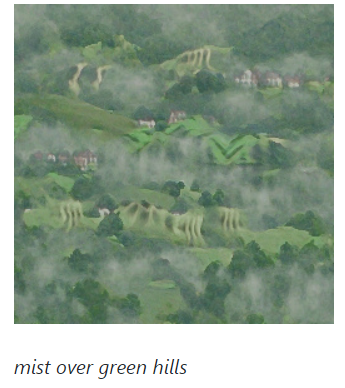
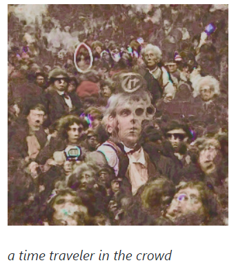
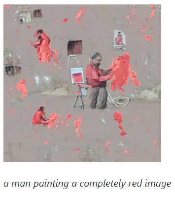

whilst browsing the internet, i recently stumbled across a github page called 'deep-daze' . Its content immediately grabbed my attention, as it lacked what I usually find on github (confusing code, terms, tech etc.) but instead featured a series of mesmerising and haunting artworks. These surrealist peices were amazing. They managed to blend colors and texture into a coherent image, but not one that represented any recognisable object or setting. Instead these ethereal images, to me, harness a dreamstate or memorylike quality.
  what i found even more interesting than the images though, were the sentences accompanying them. after looking at the github repo, i discovered that these images has been created by a machine-learing AI, which when fed a small string of words, processess an image, using a software released in January of this year by the name of OpenAI's CLIP. as someone with a background in the visual arts and only getting into the world of code now, this fascinated and confused me. i'm still not quite sure how it works but i was looking up tutorials to see if i could get it running on an old gaming machine of mine, as it requires extensive VRAM in order to process the neural network required to create these images. i believe it works on some sort of python code, which i'm yet to study, but when my technical abilities match that of this software, it is the first thing i will be delving into.
the images have such a transient quality that it instigated an arduous idea in my head about memory and the images we ourselves conjure up in our heads when thinking of the past. if you or i think of a childhood memory for example, we dont necessarily see the playground in clear hd quality as we saw it back then. instead we see a muddled, hazy version of it. if anything what we see is a reflection of how we felt in that moment, our emotions at that time, our sensory responses. i believe this deep-daze software has not only great technical potential, but artistic potential too. if i could feed the AI sentences which contained not only nouns but pronouns, maybe i could create images that in some way reflect our memories. if this software outputs memory-like images and works in a similiar way to that of our own neural networks, maybe we could finally unlock what it feels like, looks like, what it is to have memory. this could instigate a deep artistic exploration into topics like trauma, loss of memory, too many to list. one thing is for sure, this software is horrifying as much as it is alluring. more to follow...